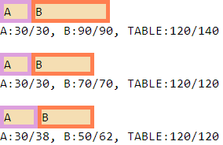
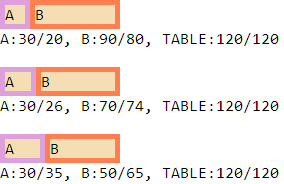
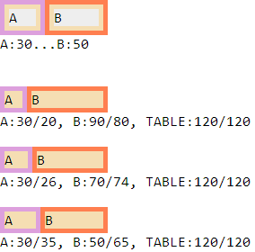

RE8018: 各浏览器中固定表格布局下对单位为 px 的 TD TH 元素的宽度作用位置有差异
标准参考
固定布局算法概述
CSS2.1 规范中对 'table-layout:fixed' 这种固定布局算法有更具体的描述，这种算法下，表格的宽度应显式的由 'width' 特性指定。如果其 'width' 为 'auto'，则代表将使用自动算法 ('table-layout:auto') 对表格布局。
在固定表格布局算法中，各列的宽度也有规定：
- 若列元素的宽度不为 'auto'，则该列的宽度即为该指定值；
- 如果单元格扩展到若干个列 (rowspan 属性) ，宽度将在列内平分；
- 其它列平均分配剩下的表格水平空间 (减去边框或单元格间隔)。
所以，表格的实际宽度是 TABLE 元素的 'width' 设定宽度和各列宽 (加上单元格间隔或边框) 之和的较大值。若表格比各列之和更宽，则多余的空间 (或宽度) 将被分配到所有列中。
关于固定表格布局，请参照 CSS2.1 规范 17.5.2.1 Fixed table layout。
问题描述
各浏览器中固定表格布局下对 TD TH 的宽度作用位置有差异，Firefox Opera IE7(S) IE8(S)1 中 TD TH 的宽度始终作用在 content box 上，而 Chrome Safari IE6 IE7(Q) IE8(Q) 作用在 border box。
注 1：IE 部分版本中从单元格溢出的内容会被自动剪裁，参见：RX1002: IE6 IE7 IE8(Q) 中从单元格溢出的内容会被自动剪裁，在本文中忽略此问题。
造成的影响
各浏览器中固定表格布局下对 TD TH 元素的宽度作用位置有差异，在不同浏览器下页面布局出现混乱。
受影响的浏览器
| 所有浏览器 |
|---|
问题分析
本文均以两列的布局为例，分四部分讨论分析差异。
1. 一列设定宽度，另一列为 auto
分析以下代码：fixed_1_width_1_auto.html
<!DOCTYPE html>
<html>
<head>
<style>
body { font-family:consolas; }
table { table-layout:fixed; width:120px; }
td { background:wheat; padding:5px; }
td div { background:#eee; }
</style>
</head>
<body>
<table cellspacing="0" cellpadding="0">
<tr>
<td id="td1" style="border:5px solid plum;">
<div id="d1">A</div>
</td>
<td id="td2" style="width:70px; border:5px solid coral;">
<div id="d2">B</div>
</td>
</tr>
</table>
<div id="info"></div>
<script>
function $(id) { return document.getElementById(id); }
$("info").innerHTML = "A:" + $("d1").offsetWidth + "...B:" + $("d2").offsetWidth;
</script>
</body>
</html>
以上代码 TABLE 元素采用固定表格布局，只给一列 TD 元素设置宽度，且该宽度未超过 TABLE 的宽度，另一列未设置宽度。
这段代码在各浏览器环境中的表现如下：
| Firefox Opera IE6(S) IE7(S) IE8(S) | Chrome Safari IE6(Q) IE7(Q) IE8(Q) |
|---|---|
 |
 |
可见，
- 在 Firefox Opera IE6(S) IE7(S) IE8(S) 中，固定表格布局下对 TD TH 元素的宽度作用在 content box 上。
- 在 Chrome Safari IE6(Q) IE7(Q) IE8(Q) 中，固定表格布局下对 TD TH 元素的宽度作用在 border box 上。
2. 两列均设定宽度
分析以下代码：fixed_2_width.html
<!DOCTYPE html>
<html>
<head>
<style>
body { font-family:consolas; }
table { table-layout:fixed; width:120px; }
td { background:wheat; }
</style>
</head>
<body>
<table id="table1" cellspacing="0" cellpadding="0">
<tr>
<td id="td11" style="width:30px; border:5px solid plum;">A</td>
<td id="td12" style="width:90px; border:5px solid coral;">B</td>
</tr>
</table>
<div id="info1"></div>
<br />
<table id="table2" cellspacing="0" cellpadding="0">
<tr>
<td id="td21" style="width:30px; border:5px solid plum;">A</td>
<td id="td22" style="width:70px; border:5px solid coral;">B</td>
</tr>
</table>
<div id="info2"></div>
<br />
<table id="table3" cellspacing="0" cellpadding="0">
<tr>
<td id="td31" style="width:30px; border:5px solid plum;">A</td>
<td id="td32" style="width:50px; border:5px solid coral;">B</td>
</tr>
</table>
<div id="info3"></div>
<script>
function $(id) { return document.getElementById(id); }
var w11 = $("td11").clientWidth,
w12 = $("td12").clientWidth,
w21 = $("td21").clientWidth,
w22 = $("td22").clientWidth,
w31 = $("td31").clientWidth,
w32 = $("td32").clientWidth,
wt1 = $("table1").offsetWidth,
wt2 = $("table2").offsetWidth;
wt3 = $("table3").offsetWidth;
$("info1").innerHTML = "A:30/" + w11 + ", B:90/" + w12 + ", TABLE:120/" + wt1;
$("info2").innerHTML = "A:30/" + w21 + ", B:70/" + w22 + ", TABLE:120/" + wt2;
$("info3").innerHTML = "A:30/" + w31 + ", B:50/" + w32 + ", TABLE:120/" + wt3;
</script>
</body>
</html>
以上代码 TABLE 元素采用固定表格布局，同时为两列 TD 元素设置了宽度。
第一组中 TD 元素的 'width' 特性值分别为 30px、90px，刚好等于 TABLE 元素设定的宽度；
第二组中 TD 元素的 'width' 特性值分别为 30px、70px，刚好等于 TABLE 元素减去单元格边框后的宽度；
第三组中 TD 元素的 'width' 特性值分别为 30px、50px，加上其 border 仍然小于 TABLE 元素设定的宽度。
这段代码在各浏览器环境中的表现如下：
| Firefox Opera IE6(S) IE7(S) IE8(S) | Chrome Safari IE6(Q) IE7(Q) IE8(Q) |
|---|---|
|  |  |
本例中得到的结论和上一个测试样例相同。此外，
- 在 Firefox Opera IE6(S) IE7(S) IE8(S) 中，当各列设定的宽度加上列的 border、padding，单元格间隙，以及表格的 border 之和大于表格设定的宽度时，表格会被撑大。
- 在 Chrome Safari IE6(Q) IE7(Q) IE8(Q) 中，当各列设定的宽度加上单元格间隙，以及表格的 border 之和大于表格设定的宽度时，表格会被撑大。
出现小于表格设定的宽度的情况时，各浏览器均会尝试根据列设定的宽度按比例重新分配列的宽度，只不过仍然是因为各浏览器在固定表格布局下 TD、TH 元素的作用位置差异，会导致重新分配后的列的宽度在各浏览器中不同。
上述分析的均为原生 TD、TH 元素，下面分析 'display' 特性值为 'table-cell' 的元素在各浏览器中宽度作用位置差异。
3. display: table-cell
分析以下代码：table-cell.html
<!DOCTYPE html>
<html>
<head>
<style>
body { font-family:consolas; }
</style>
</head>
<body>
<div style="display:table; table-layout:fixed; width:120px;">
<div style="display:table-row;">
<div style="display:table-cell; border:5px solid plum; padding:5px; background:wheat;">
<div id="d1" style="background:#eee;">A</div>
</div>
<div style="display:table-cell; width:70px; border:5px solid coral; padding:5px; background:wheat;">
<div id="d2" style="background:#eee;">B</div>
</div>
</div>
</div>
<div id="info"></div>
<br />
<br />
<div style="display:table; table-layout:fixed; width:120px;" id="table1">
<div style="display:table-row;">
<div style="display:table-cell; width:30px; border:5px solid plum; background:wheat;" id="td11">A</div>
<div style="display:table-cell; width:90px; border:5px solid coral;background:wheat;" id="td12">B</div>
</div>
</div>
<div id="info1"></div>
<br />
<div style="display:table; table-layout:fixed; width:120px;" id="table2">
<div style="display:table-row;">
<div style="display:table-cell; width:30px; border:5px solid plum; background:wheat;" id="td21">A</div>
<div style="display:table-cell; width:70px; border:5px solid coral;background:wheat;" id="td22">B</div>
</div>
</div>
<div id="info2"></div>
<br />
<div style="display:table; table-layout:fixed; width:120px;" id="table3">
<div style="display:table-row;">
<div style="display:table-cell; width:30px; border:5px solid plum; background:wheat;" id="td31">A</div>
<div style="display:table-cell; width:50px; border:5px solid coral;background:wheat;" id="td32">B</div>
</div>
</div>
<div id="info3"></div>
<script>
function $(id) { return document.getElementById(id); }
var w11 = $("td11").clientWidth,
w12 = $("td12").clientWidth,
w21 = $("td21").clientWidth,
w22 = $("td22").clientWidth,
w31 = $("td31").clientWidth,
w32 = $("td32").clientWidth,
wt1 = $("table1").offsetWidth,
wt2 = $("table2").offsetWidth;
wt3 = $("table3").offsetWidth;
$("info").innerHTML = "A:" + $("d1").offsetWidth + "...B:" + $("d2").offsetWidth;
$("info1").innerHTML = "A:30/" + w11 + ", B:90/" + w12 + ", TABLE:120/" + wt1;
$("info2").innerHTML = "A:30/" + w21 + ", B:70/" + w22 + ", TABLE:120/" + wt2;
$("info3").innerHTML = "A:30/" + w31 + ", B:50/" + w32 + ", TABLE:120/" + wt3;
</script>
</body>
</html>
这段代码模拟了上面两节中的测试样例，只是将 TABLE 元素用 'display' 特性值为 'table' 的 DIV 元素代替，将 TR 元素用 'display' 特性值为 'table-row' 的 DIV 元素代替，将 TH、TD 元素用 'display' 特性值为 'table-cell' 的 DIV 元素代替1。
这段代码在各浏览器环境中的表现如下：
| Firefox Opera IE8(S)2 | Chrome Safari |
|---|---|
 |
 |
通过截图可见，'display' 特性值为 'table-cell' 的元素对于宽度作用位置的差异与上两节中原生 TD、TH 元素的结论相同。即 Chrome Safari 固定表格布局下对 'display' 特性值为 'table-cell' 的元素的宽度作用在 border box 上。IE8(S) Firefox Opera 固定表格布局下对 'display' 特性值为 'table-cell' 的元素的宽度作用在 content box 上。
注 1: 根据 CSS2.1 规范，TABLE 元素的 'display' 特性默认值为 'table'，TD、TH 元素的 'display' 特性默认值为 'table-cell'；
注 2: 由于 IE6 IE7 IE8(Q) 不支持 display:table-cell，故下面的分析不再考虑这些浏览器。
上述分析的测试代码中表格均为 "分离的边框模型"，即 'border-collapse' 特性值为默认的 'separate'。下面将分析 "重合的边框模型" (border-collapse: collapse) 下的表格。
4. border-collapse: collapse
分析以下代码：collapse.html
<!DOCTYPE html>
<html>
<head>
<style>
body { font-family:Consolas; margin:0; }
table { table-layout:fixed; width:120px; border-collapse:collapse; }
td { background:wheat; }
</style>
</head>
<body>
<br /><br /><br />
<table id="table1" cellspacing="0" cellpadding="0">
<tr>
<td id="td11" style="width:80px; border:20px solid plum;">A</td>
<td id="td12" style="width:120px; border:20px solid coral;">B</td>
</tr>
</table>
<div id="info1"></div>
<div style="background:brown; height:3px; overflow:hidden;"></div>
<br /><br /><br />
<table id="table2" cellspacing="0" cellpadding="0">
<tr>
<td id="td21" style="width:40px; border:20px solid plum;">A</td>
<td id="td22" style="width:60px; border:20px solid coral;">B</td>
</tr>
</table>
<div id="info2"></div>
<div style="background:brown; height:3px; overflow:hidden;"></div>
<br /><br /><br />
<table id="table3" cellspacing="0" cellpadding="0">
<tr>
<td id="td31" style="width:24px; border:20px solid plum;">A</td>
<td id="td32" style="width:36px; border:20px solid coral;">B</td>
</tr>
</table>
<div id="info3"></div>
<div style="background:brown; height:3px; overflow:hidden;"></div>
<br /><br /><br />
<table id="table4" cellspacing="0" cellpadding="0">
<tr>
<td id="td41" style="width:40px; border:50px solid plum;">A</td>
<td id="td42" style="width:79px; border:50px solid coral;">B</td>
</tr>
</table>
<div id="info4"></div>
<div style="background:brown; height:3px; overflow:hidden;"></div>
<br /><br /><br />
<table id="table5" cellspacing="0" cellpadding="0">
<tr>
<td id="td51" style="width:40px; border:50px solid plum;">A</td>
<td id="td52" style="width:81px; border:50px solid coral;">B</td>
</tr>
</table>
<div id="info5"></div>
<div style="background:brown; height:3px; overflow:hidden;"></div>
<script>
function $(id) { return document.getElementById(id); }
var wt1 = $("table1").offsetWidth,
wt2 = $("table2").offsetWidth;
wt3 = $("table3").offsetWidth;
wt4 = $("table4").offsetWidth;
wt5 = $("table5").offsetWidth;
$("info1").innerHTML = "TABLE:120/" + wt1;
$("info2").innerHTML = "TABLE:120/" + wt2;
$("info3").innerHTML = "TABLE:120/" + wt3;
$("info4").innerHTML = "TABLE:120/" + wt4;
$("info5").innerHTML = "TABLE:120/" + wt5;
</script>
</body>
</html>
这段代码在各浏览器环境中的表现如下：
| Firefox Opera IE6(S) IE7(S) IE8(S)1 | Chrome Safari | IE6(Q) IE7(Q) IE8(Q) |
|---|---|---|
 |
 |
 |
- Firefox Opera IE6(S) IE7(S) IE8(S) 中在 "重合的边框模型" 中单元格的宽度仍然趋向于作用在 content box，
第一个表格中，表格设定宽度为 120px，各列宽度之和为 10 + 10 + 80 + 10 + 10 + 120 + 10 + 10 = 260px > 120px，则表格宽度为 260px。
第二个表格中，表格设定宽度为 120px，各列宽度之和为 10 + 10 + 40 + 10 + 10 + 60 + 10 + 10 = 160px > 120px，则表格宽度仍然为 160px。
第三个表格中，表格设定宽度为 120px，各列宽度之和为 10 + 10 + 24 + 10 + 10 + 36 + 10 + 10 = 120px = 120px，两个值刚好相等，则表格宽度仍然为 120px。
第四个表格中，表格设定宽度为 120px，各列宽度之和为 25 + 25 + 40 + 25 + 25 + 79 + 25 + 25 = 269px > 120px，则表格宽度为 269px。
第四个表格中，表格设定宽度为 120px，各列宽度之和为 25 + 25 + 40 + 25 + 25 + 81 + 25 + 25 = 271px > 120px，则表格宽度为 271px。
因此，在 Firefox Opera IE6(S) IE7(S) IE8(S) 中，"重合的边框模型" 下表格的宽度实际上为 各列的设定宽度 + 各边框宽度 与 表格设定宽度 (作用于 border box) 两者中的较大者。而表格内单元格的设定宽度也均作用于 content box。 - Chrome Safari 中在 "重合的边框模型" 中单元格的宽度仍然趋向于作用在 border box，在 "重合的边框模型" 中单元格实际边框宽度仅有最终计算出来该边宽度的一半，浏览器首先需要决定各列宽之和与表格宽度的较大者，
第一个表格中，表格设定宽度为 120px，各列宽度之和为 10 + 80 + 120 + 10 = 220px > 120px，则表格宽度为 220px。
第二个表格中，表格设定宽度为 120px，各列宽度之和为 10 + 40 + 60 + 10 = 120px = 120px，两个值刚好相等，则表格宽度仍然为 120px。
第三个表格中，表格设定宽度为 120px，各列宽度之和为 10 + 24 + 36 + 10 = 80px < 120px，则表格宽度为较大的 120px。
第四个表格中，表格设定宽度为 120px，各列宽度之和为 25 + 40 + 79 + 25 = 169px > 120px，则表格宽度为 169px。
第五个表格中，表格设定宽度为 120px，各列宽度之和为 25 + 40 + 81 + 25 = 171px > 120px，则表格宽度为 171px。
因此，在 Chrome Safari 中，"重合的边框模型" 下表格的宽度实际上为 表格最左侧边框的一半 + 各列的设定宽度 + 表格最右侧边框的一半 与 表格设定宽度 (作用于 border box) 两者中的较大者。而表格内单元格的设定宽度也均作用于 border box。 - IE6(Q) IE7(Q) IE8(Q) 中在 "重合的边框模型" 中，通过截图对比可知，单元格设定宽度的作用位置既不是 content box 也不是 border box，而且表格的实际宽度为 各列宽度之和 与 表格设定宽度的较大者。
CSS2.1 规范中并没有明确说明固定表格布局 (table-layout: fixed) 下单元格的宽度作用位置以及具体算法，所以各浏览器出现了较大的差异。
注 1: 忽略各浏览器在某些位置的边框颜色渲染差异，具体请参见相关问题链接。
解决方案
在 'table-layout:fixed' 这种固定布局算法下的表格中，可以为表格最后一列不设置宽度，尽量消除由算法差异带来的列的宽度差异，防止不同浏览器之间表格实际计算的宽度不同。
此外，在使用表格时，应尽量避免恰恰以来单元格的某个特性宽度值进行布局，这很可能导致某些浏览器中由于单元格宽度算法差异导致的意外折行或者内容溢出等现象。
参见
知识库
相关问题
- RE8001: 固定表格布局下的各浏览器对与表格宽度计算算法不同
- RE8002: 各浏览器对 table 级元素的 'width' 特性的作用位置存在差异
- RE2007: 各浏览器解决表格边框冲突的方式存在差异
- RX1002: IE6 IE7 IE8(Q) 中从单元格溢出的内容会被自动剪裁
测试环境
| 操作系统版本: | Windows 7 Ultimate build 7600 |
|---|---|
| 浏览器版本: |
IE6 IE7 IE8 Firefox 3.6.10 Chrome 7.0.517.17 dev Safari 5.0.2 Opera 10.62 |
| 测试页面: |
fixed_1_width_1_auto.html fixed_2_width.html table-cell.html collapse.html |
| 本文更新时间: | 2010-09-25 |
关键字
table-layout 表格 布局 fixed 固定 TD 宽度